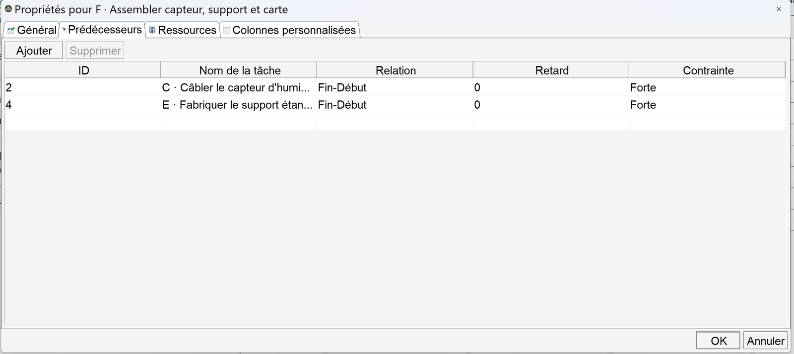

📅 Le diagramme de planification des tâches
Ce qui doit attendre, ce qui peut avancer en même temps — et la seule chaîne de tâches qui décide de la date de fin.
📚 Le référentiel — en toutes lettres
Voici, mot pour mot, ce que demande le programme de technologie du cycle 4 (2024) sur ce point. Ce n'est pas un résumé : c'est le texte.
| D'où ça vient | Ce qui est écrit |
|---|---|
| Connaissances associées, gestion de projet | « Le diagramme de planification des tâches : notion de tâches, durée et contraintes entre tâches. » |
| Compétence, en 5e | Suivre un processus de réalisation d'un objet avec des tâches identifiées. |
| Compétence, en 4e | Organiser un processus de réalisation d'un objet avec des tâches identifiées. |
| Compétence, en 3e | Élaborer un processus de réalisation d'un objet avec des tâches identifiées. |
Le programme nomme trois choses, et trois seulement : les tâches, leur durée, et les contraintes entre tâches. Tout le reste — le chemin le plus long, les marges, le jalon — se déduit de ces trois-là. C'est pour ça qu'on commence par elles.
🔎 Ce que disent ces étiquettes. 5e · 4e · 3e : la même notion aux trois niveaux, avec un travail différent à chacun. C7.1 : un code de classement propre à ce site, écrit en toutes lettres plus bas. D2 · D3 · D4 : les domaines du socle commun. ✂ Bandes de papier : on découpe vraiment, avant d'ouvrir un logiciel.
Référence normative : programme de technologie du cycle 4, BO n°9 du 29 février 2024. Codification opérationnelle : les codes 5e_C7.1 · 4e_C7.1 · 3e_C7.1 (« C7.1 » sur l'étiquette de l'atelier) servent à ranger les séquences ; ils ne viennent pas du programme officiel.
Tes réponses sont enregistrées dans ce navigateur uniquement : elles ne partent nulle part, et tu les retrouveras sur ce même ordinateur.
🖥️ Ordinateur partagé (salle de techno, CDI — le centre de documentation et d'information) : un autre élève qui ouvre cette page sur la même session verra tes réponses.
Quand tu as fini : imprime en PDF si tu veux garder une trace, puis clique sur « 🗑 Effacer ma sauvegarde ».
🎯 Le mode essentiel masque les corrections et les compléments : il ne reste que les consignes et les exercices. Rien n'est perdu — un second clic ramène tout.
🔄 Avant de commencer : ce que je vérifie
Pour toi, sans note : coche ce qui est déjà en place. Sous chaque ligne, un lien pour le reprendre si tu n'en es pas sûr·e.
-
→ pas encore sûr·e ? relis « Comment construire le planning, geste après geste ? » dans la synthèse de l'atelier
-
→ pas encore sûr·e ? relis « Pourquoi un projet dure-t-il moins que la somme de ses tâches ? » dans la synthèse de l'atelier
Dans cet atelier : la liste n'existe pas. C'est toi qui découpes le projet en tâches, qui estimes chaque durée, et qui réponds à la seule question qui compte pour un client : ce sera prêt quand ?
À garder en tête : une tâche a une durée ; une flèche dit qu'une tâche doit finir avant qu'une autre commence ; la plus longue chaîne de flèches décide de la date de fin.
🏠 La situation : trois projets, et une même question
Trois projets, une même question. Dans les trois niveaux, un projet est lancé. En 5e, un indicateur de rangement pour le hall du collège. En 4e, le jardin connecté qui s'arrose seul — celui du quartier de Brooklyn, à New York, dont s'inspire le thème. En 3e, un capteur de confort qui signale une salle devenue invivable.
Ce qui arrive à chaque fois. Chaque fois, la même chose arrive. Le groupe se répartit le travail, tout le monde s'active, et trois séances plus tard on découvre qu'on attend : le support n'est pas prêt, alors on ne peut rien assembler ; le programme est écrit depuis longtemps, mais il n'y a rien à téléverser. Des gens ont travaillé, et le projet n'a pas avancé d'un jour.
Ce n'est pas un défaut d'organisation des élèves. C'est que certaines tâches doivent attendre les autres, et d'autres non — et que tant que ce n'est pas écrit quelque part, personne ne peut le savoir.
❓ La question de l'atelier
Comment savoir, avant de commencer, ce qui doit attendre, ce qui peut avancer en même temps, et quel jour le projet sera fini ?
💭 Ton hypothèse de départ
Réponds avant de lire la suite. Personne ne te note, et tu reliras ta réponse à la fin.
Un projet dure 9 séances. Ton groupe décide de travailler deux fois plus vite sur une
tâche : elle passe de 2 séances à 1.
Le projet finira-t-il plus tôt ?
Réponds par
oui, non, ou « ça dépend » — et dis de quoi ça dépend.
🔤 Deux noms pour le même dessin
Le programme dit « diagramme de planification des tâches ». Dans les entreprises, le même dessin s'appelle un diagramme de Gantt, du nom de l'ingénieur américain Henry Gantt. Les deux noms désignent la même chose : on apprend le concept sous le nom du programme, et on retient le nom du métier parce qu'il est écrit sur tous les logiciels.
0 / 3 étapes validées
🎫 Billet d'entrée — trois questions (5 min, sans note)
Réponds avec ce que tu sais déjà. Le but est de savoir d'où l'on part, pas de te juger.
🎒 Je révise en 3 minutes
Une tâche est une chose dont on peut dire, à un instant donné, si elle est terminée ou non. « Travailler sur le capteur » n'est pas une tâche : on ne saura jamais quand c'est fini. « Câbler le capteur sur la carte » en est une.
Un jalon ne dure pas. C'est un point de contrôle : « le prototype fonctionne », « le cahier des charges est validé ». On l'écrit avec une durée de zéro. Il ne fait pas avancer le projet ; il dit qu'on est arrivé quelque part.
Une contrainte d'antériorité dit « B ne peut pas commencer avant que A soit finie ». C'est la seule contrainte que demande le programme, et c'est la plus utile : elle sépare ce qui doit attendre de ce qui pourrait avancer en même temps.
Deux tâches sans contrainte entre elles peuvent avancer en même temps. C'est là, et seulement là, qu'un groupe gagne du temps en se répartissant le travail.
🔍 La correction, et pourquoi elle est comme ça
1. Une tâche : on peut dire, à un instant donné, si elle est terminée ou non.
« Câbler le capteur sur la carte » : on peut constater que c'est fait.
Être importante, être écrite dans le cahier des charges ou être faite par une seule personne
ne suffit pas : « travailler sur le capteur » peut être tout cela, et ne jamais finir.
2. « Le prototype fonctionne » : un jalon, un point de contrôle qui ne dure pas.
Personne ne « fait » cette ligne : on constate qu'on y est arrivé. Sa durée est zéro.
Ce n'est ni une contrainte d'antériorité (elle relie deux tâches), ni une durée (un nombre de séances).
3. Deux tâches sans contrainte peuvent avancer en même temps : c'est là qu'on gagne du temps.
Rien n'oblige à attendre la fin de l'une pour commencer l'autre : deux élèves s'y mettent en parallèle.
Elles ne sont pas forcément sur le chemin le plus long, et on ne les fusionne pas : ce sont deux travaux différents.
Une réponse fausse ? Aucune note n'est prise : ces trois mots reviennent dans toute la suite.
✂ Activité 1 — Le planning en bandes de papier (~25 min)
On ne commence pas par un logiciel. Un diagramme de planification, c'est d'abord des longueurs qu'on peut comparer à l'œil. Une bande deux fois plus longue, c'est une tâche deux fois plus longue : rien à expliquer, ça se voit.
Le matériel
Une feuille A4, une règle, des ciseaux, et du ruban adhésif ou de la colle. Rien d'autre. Aucun branchement, aucune alimentation : cette activité ne présente aucun risque électrique.
Ce que tu fais, dans l'ordre
- Prends ton projet de l'année — celui de ta classe, pas un exemple. Écris la liste de ce qu'il y a à faire.
- Garde uniquement ce dont tu peux dire « c'est fini ». Le reste, tu le reformules ou tu le jettes.
- Donne à chaque tâche une durée en séances. Tu ne la connais pas : tu l'estimes. C'est normal, et c'est le métier.
- Découpe une bande de papier par tâche : 2 cm par séance. Une tâche de 3 séances fait 6 cm.
- Trace sur une feuille une ligne de temps graduée en séances, une graduation tous les 2 cm.
- Colle les bandes, une par ligne, en commençant chacune le plus tôt possible : juste après la fin de la dernière tâche qu'elle doit attendre.
- Ajoute un losange à la fin, sans longueur : c'est ton jalon.
Ce choix ne se devine pas depuis la page : c'est toi qui sais si tu as découpé. Le vérificateur, lui, refusera de valider tant que ce n'est pas fait.
Ce que tu écris ensuite
Recopie ci-dessous trois tâches de ton projet, une par ligne, avec leur durée en séances et ce qu'elles doivent attendre. Puis, en quatrième ligne, écris ton jalon.
Un exemple de forme, pour que ce soit lisible :
Câbler le capteur — 2 séances — après : choisir les grandeurs
✍ Ta réponse écrite sera relue par ton professeur : « Vérifier » regarde si l'essentiel y est, pas si tout est juste.
🔍 La correction, et pourquoi elle est comme ça
Ce qui était attendu. Trois lignes qui sont vraiment des tâches — un verbe d'action, et un état de fin qu'on pourrait constater — chacune avec un nombre de séances. Et une quatrième ligne qui est un jalon : pas de durée, un état atteint.
L'erreur la plus fréquente : la fausse tâche. « Travailler sur le boîtier », « avancer le programme », « faire des recherches ». Aucune ne peut être déclarée terminée. Ce sont des intentions, pas des tâches. Le test : si je reviens dans une semaine, est-ce que je peux dire oui ou non ?
La deuxième erreur : la durée qu'on refuse d'écrire parce qu'« on ne peut pas savoir ». Justement : on ne peut pas savoir, donc on estime, on écrit le chiffre, et à la fin du projet on compare avec ce qui s'est passé. Une estimation qu'on n'a jamais confrontée au réel ne s'améliore jamais.
Piège classique. Écrire « après : tout le reste » pour être tranquille. Une tâche qui attend tout n'apprend rien : c'est en cherchant ce qu'elle attend vraiment qu'on découvre ce qui aurait pu avancer en parallèle.
À retenir. Une tâche : on peut dire si elle est finie. Une durée : on l'estime, on ne la connaît pas. Une contrainte d'antériorité : B attend A. Un jalon : un point de contrôle sans durée. Deux tâches sans lien : elles avancent ensemble.
Critère de réussite : tes bandes sont collées, et tes trois tâches pourraient être déclarées terminées par quelqu'un qui passerait dans la salle.
🏚 3e · Élaborer — le capteur de confort
En 3e, on ne te donne plus le planning : tu l'élabores. Tu identifies les tâches, tu estimes les durées, tu poses les contraintes — et tu cherches la seule chose qui décide de la date de fin : le chemin le plus long.
Voici le projet tel qu'une équipe l'a écrit. C'est un vrai découpage de projet, avec ses chevauchements.
| Tâche | Ce qu'il y a à faire | Durée (séances) | Ne peut commencer qu'après |
|---|---|---|---|
| A | Définir ce qu'on appelle une salle inconfortable | 1 | — |
| B | Choisir les grandeurs à mesurer | 1 | A |
| C | Rédiger le cahier des charges | 1 | B |
| D | Modéliser le boîtier | 2 | C |
| E | Imprimer le boîtier | 3 | D |
| F | Écrire le programme de mesure et d'alerte | 2 | C |
| G | Câbler les capteurs sur la carte | 1 | B |
| H | Assembler la carte dans le boîtier | 1 | E, G |
| I | Téléverser et étalonner | 1 | F, H |
| J | Mesurer trois jours et comparer au cahier des charges | 2 | I |
| K | Le capteur signale la surchauffe ◆ jalon | 0 | J |
a) La durée totale, et pourquoi
b) Le chemin le plus long
Cherche la suite de tâches enchaînées la plus longue, du début au jalon final. C'est elle qui fixe la date de fin.
c) Ce que tu écris — sur TON projet
Reprends ton propre projet de 3e. Écris le chemin le plus long de ton projet, sous la forme d'une suite de tâches, puis la tâche sur laquelle il ne sert à rien de se précipiter, avec la raison.
🔍 La correction, et pourquoi elle est comme ça
La durée totale est de 12 séances, alors que la somme des durées vaut 15. L'écart n'est pas une erreur : il vient du parallélisme. Plusieurs tâches avancent en même temps, donc leurs durées ne s'additionnent pas.
Le chemin le plus long est A → B → C → D → E → H → I → J → K. On le trouve en remontant depuis le jalon final : à chaque étape, on garde celle des tâches attendues qui finit le plus tard. En arrivant au début, on a la chaîne complète.
Les tâches hors chemin : F (+4), G (+5). Le nombre entre parenthèses est leur marge : le retard qu'elles peuvent prendre sans rien décaler. Raccourcir l'une d'elles fait gagner zéro séance au projet — c'est le résultat le plus contre-intuitif de tout l'atelier, et le plus utile.
Raccourcir une tâche du chemin, en revanche, fait gagner une séance — jusqu'au moment où un autre chemin devient le plus long à son tour. C'est pour ça qu'on recalcule après chaque changement : le chemin le plus long n'est pas une propriété définitive du projet, c'est le résultat d'un calcul sur les durées du moment.
Le nom du métier. Cette chaîne s'appelle le chemin critique. « Critique » n'a rien à voir avec la difficulté ou l'importance : une tâche critique peut être facile. Elle est critique parce qu'elle n'a aucune marge.
Piège classique. Prendre pour chemin critique la suite des tâches les plus longues. Ce n'est pas ça : c'est la suite enchaînée la plus longue. Une tâche de 3 séances qui n'attend personne et que personne n'attend n'est pas critique.
Deuxième piège. Croire qu'ajouter des personnes sur une tâche la raccourcit. Certaines tâches se divisent (câbler quatre capteurs), d'autres non (attendre qu'une impression 3D se termine). Le planning ne dit pas ce qui se divise : il dit seulement où ça vaudrait la peine d'essayer.
![Diagramme de planification du projet.
Une ligne par tâche, une colonne par séance. Les tâches A → B → C → D → E → H → I → J → K sont
dessinées en barres pleines colorées : ce sont celles du chemin le plus long,
elles n'ont aucune marge. Les autres sont en barres sombres, chacune posée dans
un rectangle en pointillés qui va de sa date au plus tôt à sa date au plus tard,
avec une barre fantôme montrant où elle pourrait être placée au plus tard, et sa
marge écrite à droite. Des flèches relient chaque tâche à celles qui l'attendent.
Le projet tient en 12 séances.](Images/gantt_capteur-confort-ny.svg)
Trois choses à savoir lire là-dessus.
1. Les barres pleines colorées forment le chemin le plus long (A → B → C → D → E → H → I → J → K) : elles n'ont aucun jeu, une séance de retard sur l'une d'elles est une séance de retard sur tout le projet.
2. Les autres ont du jeu, et le rectangle en pointillés le montre : la tâche G aurait pu être placée n'importe où dans son rectangle sans rien retarder — la barre pâle indique sa position la plus tardive possible.
3. Ce chemin peut changer. Allonge une tâche à marge jusqu'à remplir son rectangle : elle devient critique, et une autre cesse de l'être. Le chemin le plus long n'est pas gravé dans le projet, il dépend des durées.
À retenir. La durée d'un projet n'est pas la somme des durées de ses tâches : c'est la longueur de sa plus longue chaîne enchaînée. Gagner du temps ailleurs ne gagne rien. Ce chemin porte, dans le métier, le nom de chemin critique.
Critère de réussite : tu peux montrer, sur ton propre projet, une tâche où se précipiter ne sert à rien — et dire pourquoi.
🖥 Le logiciel — GanttProject, pas à pas
Le logiciel n'est pas la compétence. Ce qui est évalué, c'est de savoir ce qu'est une tâche, une durée, une contrainte, et le chemin le plus long. On peut prouver tout cela avec des bandes de papier. Le logiciel sert à recalculer vite quand quelque chose change — et c'est déjà énorme.
🅰 Voie A — avec le logiciel
Tu ouvres GanttProject, tu saisis, tu lis, tu affiches le chemin critique. Tu rends une capture de ton diagramme.
🅱 Voie B — sans ordinateur
Tu fais tout avec les bandes de papier de l'étape 1 et une ligne de temps graduée. Tu rends ta feuille. Les mêmes questions te seront posées, et elles valent autant.
Ces cinq images sont de vraies captures du logiciel, prises en
français, sur le fichier du jardin connecté que tu peux ouvrir toi-même
(jardin_connecte_brooklyn.gan, à côté de cette page). Les détails de version sont
dans SOURCES_MEDIAS.md.
① Saisir les tâches et les durées
Au démarrage, GanttProject affiche deux moitiés. À gauche, un tableau : une ligne par tâche. À droite, le dessin : une barre par tâche, posée sur un calendrier. Les deux montrent la même chose. Quand tu changes une valeur à gauche, la barre bouge à droite — c'est le seul vrai service que rend le logiciel.
![Fenêtre de GanttProject en français. En haut, la barre de menus : Projet, Éditer, Affichage, Tâches, Ressources, Aide. En dessous, deux onglets : Diagramme de Gantt, actif, et Diagramme des Ressources. Le tableau des tâches occupe la gauche, avec quatre colonnes : Nom, Date de début, Date de fin, Durée. Neuf lignes sont remplies, de A à I, pour le projet du jardin connecté : A Relever les besoins en eau des plantes de la cour, une séance ; B Choisir les grandeurs à mesurer, une séance ; C Câbler le capteur d'humidité du sol, deux séances ; D Écrire le programme d'arrosage, deux séances ; E Fabriquer le support étanche du capteur, trois séances ; F Assembler capteur, support et carte, une séance ; G Téléverser et régler le seuil d'arrosage, une séance ; H Tester une semaine et relever les mesures, deux séances ; I Le jardin s'arrose seul, durée zéro. À droite, le début du diagramme montre les barres correspondantes.](Images/ganttproject_1_saisir_les_taches_et_les_durees.png)
Comment ajouter une tâche : menu Tâches, puis la première entrée du menu. Une ligne vide apparaît ; tape le nom, valide avec Entrée.
Si tu ne vois pas la colonne Durée : élargis le tableau en faisant glisser la séparation verticale entre le tableau et le dessin, vers la droite.
Attention à la première ligne du projet. GanttProject place les tâches sur de vraies dates de calendrier, pas sur des « séances ». Il saute les samedis et les dimanches tout seul. Ici, une séance = un jour ouvré : la séance 1 est le lundi de la première semaine. Ça ne change rien au raisonnement, et ça évite de recompter les week-ends à la main.
② Changer une durée — la boîte des propriétés
La durée se tape directement dans la colonne Durée. Mais il vaut mieux connaître la boîte complète : c'est là que tout se règle. Double-clique sur une tâche.
![Boîte de dialogue intitulée Propriétés pour F, Assembler capteur, support et carte. Elle comporte quatre onglets : Général, actif ; Prédécesseurs ; Ressources ; Colonnes personnalisées. Dans l'onglet Général on lit : Nom, avec le texte de la tâche ; une case à cocher Jalon, décochée ; Options de planification, réglé sur dans cette boîte de dialogue ; Date de début, 14 septembre 2026 ; Date de fin, grisée, 14 septembre 2026 ; Durée, 1 ; Date de début au plus tôt, grisée ; Priorité, Normale ; Avancement, 0 ; Afficher dans la planification ; Graphisme ; Couleurs ; Lien internet. À droite, une grande zone Notes, vide. En bas à droite, les boutons OK et Annuler.](Images/ganttproject_2_proprietes_duree_de_la_tache.png)
Pour créer un jalon : coche Jalon. La durée passe à zéro et la barre devient un losange. C'est ainsi qu'on écrit « le jardin s'arrose seul » : ce n'est pas un travail, c'est un résultat atteint.
Pourquoi « Date de fin » est grisée : parce qu'elle est calculée. Tu donnes le début et la durée ; la fin en découle. Un logiciel de planification refuse qu'on lui impose deux fois la même information — s'il te laissait taper les trois, tu pourrais écrire quelque chose de faux.
③ Déclarer ce qu'une tâche doit attendre
C'est le geste important de tout l'atelier. Sans lui, le logiciel n'est qu'un tableau de dates ; avec lui, il devient un outil qui recalcule.
Dans la même boîte, va sur l'onglet Prédécesseurs.

Ce que « Fin-Début » veut dire : la fin de la tâche attendue commande le début de celle-ci. C'est exactement la contrainte d'antériorité du programme, et c'est la seule dont tu auras besoin.
Pour en ajouter une : clique Ajouter, puis choisis la tâche dans la liste. Le Retard reste à 0.
Ici, F attend deux tâches : C et E. Le logiciel la fera commencer après la plus tardive des deux, tout seul — c'est le calcul que tu as fait à la main en 4e.
L'autre façon de faire, plus rapide et plus risquée : sur le dessin, attraper le bord d'une barre et le tirer jusqu'à une autre barre. Le lien se crée. C'est pratique, mais on relie facilement les mauvaises tâches sans s'en apercevoir. Après un glisser-déposer, rouvre toujours l'onglet Prédécesseurs pour vérifier.
④ Lire le diagramme : les barres et les dates
Une fois les contraintes posées, le logiciel place tout. Les barres se décalent, et des flèches apparaissent : chaque flèche est une contrainte que tu as déclarée.
![Fenêtre complète de GanttProject. À gauche le tableau des neuf tâches avec leurs dates et durées ; à droite le diagramme. L'échelle du haut affiche Semaine 36, Semaine 37, Semaine 38, Semaine 39, Semaine 40, et les numéros de jours en dessous. Neuf barres bleues sont posées en escalier, une par tâche, reliées par des flèches noires qui partent de la fin d'une barre pour rejoindre le début de la suivante. La dernière tâche est un petit losange bleu, sans longueur. Deux barres, celles de C et de D, ne sont reliées à rien vers l'aval immédiat et se chevauchent dans le temps avec d'autres barres. En haut du diagramme, les commandes Zoom avant, Zoom arrière, Début du projet, Reculer, Avancer, et à droite Afficher le chemin critique.](Images/ganttproject_4_les_barres_et_les_dates.png)
Ce que raconte le dessin : deux barres qui se chevauchent verticalement sont deux tâches qui avancent en même temps. C'est le parallélisme, et c'est visible d'un coup d'œil — impossible à voir dans une simple liste.
Si tes barres sont minuscules : clique Zoom avant. Si tu es perdu dans le calendrier : Début du projet te ramène au premier jour.
⑤ Faire apparaître le chemin le plus long
En haut à droite du diagramme, une commande : Afficher le chemin critique. Clique dessus.

Celles qui restent unies — ici C et D — peuvent prendre du retard sans décaler la fin du projet.
Le bouton change de nom : il affiche maintenant Masquer le chemin critique. C'est ainsi qu'on sait qu'il est actif.
Ne dis jamais « les barres rouges ». Selon la version et le système, la mise en évidence peut être une hachure, une couleur, un contour. Dis « les tâches mises en évidence » — ce sera vrai partout, et tu ne seras pas perdu devant un autre écran.
Vérifie que tu sais te repérer
🔍 La correction, et pourquoi elle est comme ça
La commande du chemin critique est en haut à droite du diagramme, pas dans un menu. Beaucoup d'élèves la cherchent dans « Affichage » et abandonnent : elle est sur la barre du diagramme lui-même, à l'opposé des commandes de zoom.
L'onglet Prédécesseurs est le seul endroit où l'on voit et vérifie les contraintes d'une tâche. Le glisser-déposer les crée ; cet onglet les prouve.
La case Jalon met la durée à zéro et remplace la barre par un losange. Mettre « 0 » dans la colonne Durée produit le même résultat : les deux chemins mènent au même endroit, et c'est normal — un logiciel offre souvent plusieurs façons de dire la même chose.
La date de fin est calculée à partir du début et de la durée. La griser est une protection : elle empêche d'écrire un planning qui se contredit lui-même.
Fin-Début : la fin de l'une commande le début de l'autre. C'est le mot du métier pour la contrainte d'antériorité du programme.
Le piège du logiciel. Un diagramme joli ne prouve rien. Si les contraintes n'ont pas été déclarées, toutes les barres commencent le premier jour, le dessin est net, et il est faux. Les flèches sont la preuve que le planning existe : pas de flèche, pas de planning.
À retenir. Le logiciel ne planifie pas à ta place : il applique les contraintes que tu lui as données, et il recalcule quand tu changes une durée. Le travail — identifier les tâches, estimer les durées, dire ce qui attend quoi — reste entièrement le tien.
Critère de réussite : ton diagramme a des flèches, un losange à la fin, et tu peux montrer du doigt une tâche qui n'est pas sur le chemin le plus long.
🎁 Bonus (facultatif — hors parcours obligatoire)
Ces défis ne sont pas notés et ne comptent pas dans ta progression. Chacun a sa correction, repliée : cherche d'abord, ouvre ensuite.
Défi 1 — la tâche à laquelle personne n'a pensé
Ajoute au projet une tâche oubliée : « demander l'autorisation d'installer dans la salle 214 », une séance. Où la places-tu ? Qu'attend-elle ? Et le projet finit-il plus tard ?
Voir la correction
Elle n'attend rien : on peut la faire dès la première séance. En revanche K ne peut pas avoir lieu sans elle — c'est une contrainte d'antériorité vers la fin, pas vers le début.
Le projet ne finit pas plus tard. Elle dure 1 séance et dispose de tout l'intervalle jusqu'à la fin : elle a énormément de marge, donc elle n'entre pas sur le chemin le plus long, qui reste A → B → C → D → E → H → I → J → K et 12 séances.
Ce qu'il fallait repérer : une tâche ajoutée n'allonge le projet que si elle se place sur le chemin le plus long. Ajouter du travail et allonger le projet sont deux choses différentes — c'est contre-intuitif, et c'est tout l'intérêt du défi. L'erreur naturelle est de répondre « une tâche de plus, donc une séance de plus ».
Défi 2 — le professeur est absent une semaine
Une séance saute au milieu du projet. Toutes les tâches reculent-elles d'autant ? Explique avec le vocabulaire de l'atelier.
Voir la correction
Non. Il faut regarder où tombe la semaine perdue.
Si elle touche une tâche du chemin le plus long (A → B → C → D → E → H → I → J → K), tout recule d'une séance et le projet passe de 12 à 13 séances : ces tâches n'ont aucune marge.
Si elle ne touche qu'une tâche à marge — par exemple F, Écrire le programme de mesure et d'alerte, qui a 4 séance(s) de marge — la tâche décale, mais la date de fin ne bouge pas. La marge est faite pour ça : c'est du jeu, et le jeu s'use.
Ce qu'il fallait repérer : la plus grande marge du projet est de 5 séance(s). Un retard plus long que ça finit toujours par se voir sur la date de fin, même hors du chemin le plus long.
Défi 3 — une contrainte dans un vrai chantier
Cherche le plan de construction d'un pont ou d'une tour, à New York ou ailleurs, et trouve une tâche qui a manifestement dû attendre une autre. Écris la contrainte comme on l'a écrite ici.
Voir la correction
Il n'y a pas une seule bonne réponse, mais il y a une bonne forme. Exemple sur un pont : « Couler le tablier » attend « Couler les piles ». Écrit comme dans l'atelier : Couler le tablier — antériorité : Couler les piles — relation fin-début.
Sur une tour : « Poser les façades vitrées » attend « Monter la structure de l'étage ». Et une tâche qui n'attend pas : « Fabriquer les vitrages en usine » peut avancer en même temps que la structure monte.
Ta réponse est juste si elle dit trois choses : quelle tâche attend, laquelle elle attend, et pourquoi physiquement elle ne peut pas commencer avant. Si tu ne trouves pas le « pourquoi physiquement », c'est peut-être qu'il n'y a pas de vraie contrainte — juste une habitude d'organisation.
🏁 Bilan — et ton hypothèse de départ
Tu avais répondu, au début, à cette question : un projet dure 9 séances, on divise par deux la durée d'une tâche — le projet finit-il plus tôt ?
La réponse est « ça dépend », et on sait maintenant de quoi : de la présence, ou non, de cette tâche sur le chemin le plus long. Sur le chemin : on gagne. Hors du chemin : on ne gagne rien du tout, on transpire pour rien.
Relis ta réponse du début. Tu peux la corriger ici — on garde les deux, c'est ça qui montre le chemin parcouru.
Où en es-tu ?
🧠 Prêt·e à t'entraîner ?
Le QCM (questionnaire à choix multiples) de cet atelier comporte 30 questions, dont 5 illustrées par les captures du logiciel. Il balaie le vocabulaire, les trois façons de travailler un planning selon le niveau, le chemin le plus long, et le pas à pas du logiciel : tu y trouveras donc quelques questions qui vont un peu plus loin que ta page.
📜 Les traces à garder
Ce que cet atelier t'apprend tient en deux pages, à relire avant l'évaluation et à garder dans ton classeur :
📌 Synthèse élève — planifier les tâches 🎓 Synthèse professeur